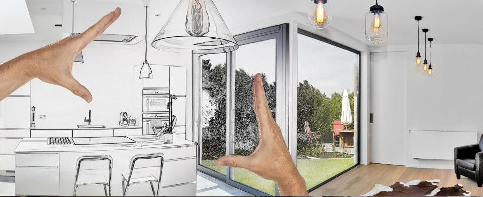

NÊN CẢI TẠO HAY XÂY MỚI NHÀ
Tại các thành phố , nhất là các thành phố lớn và lâu đời, luôn tồn tại các căn nhà cũ, đã trải qua nhiều năm sử dụng. Khi xã hội phát triển, dân số bùng nổ, trong các gia đình cũng tăng số người cư trú, vì vậy nhu cầu sử dụng cũng khác, ngôi nhà cũ trở nên chật chội và lạc hậu, thêm tác động của thời tiết và kỹ thuật xây dựng không đạt dẫn đến ngôi nhà xuống cấp. Vậy nên phá dỡ, xây mới hay cải tạo từ khung xương nhà cũ. KPCT sẽ đưa ra các vấn đề mấu chốt giúp Chủ nhà lựa chọn phương án phù hợp.
1. Những trường hợp ngôi nhà cần xây mới:
- Mua nhà trong khu đô thị cũ, đã hư nát, thấm dột nhiều, phần bê tông bị nứt trông thấy cả thép chịu lực bên trong
- Nhà kiên cố nhưng đã xây dựng trên 30 năm.
- Nhà cấp 4 xuống cấp, thấm, dột.
- Kiểu nhà cũ quá xấu và kết cấu không đảm bảo.
- Nhu cầu diện tích sử dụng tăng tăng gấp 2-3 lần. Khung kết cấu còn sử dụng được nhưng không đáp ứng nâng thêm tầng.
- Có đủ thời gian và kinh phí xây dựng để xây dựng mới.
Những trường hợp đã liệt kê trên cho thấy ngôi nhà có kết cấu không đảm bảo an toàn để tiếp tục sử dụng, các chức năng của ngôi nhà không còn được đáp ứng nhu cầu hiện tại, ảnh hưởng xấu tới chất lượng cuộc sống của gia chủ. Ngoài ra, nếu nhà quá cũ việc cải tạo không đem lại hiệu quả kinh tế và tiết kiệm thời gian...
- Mua nhà trong khu đô thị cũ, đã hư nát, thấm dột nhiều, phần bê tông bị nứt trông thấy cả thép chịu lực bên trong
- Nhà kiên cố nhưng đã xây dựng trên 30 năm.
- Nhà cấp 4 xuống cấp, thấm, dột.
- Kiểu nhà cũ quá xấu và kết cấu không đảm bảo.
- Nhu cầu diện tích sử dụng tăng tăng gấp 2-3 lần. Khung kết cấu còn sử dụng được nhưng không đáp ứng nâng thêm tầng.
- Có đủ thời gian và kinh phí xây dựng để xây dựng mới.
Những trường hợp đã liệt kê trên cho thấy ngôi nhà có kết cấu không đảm bảo an toàn để tiếp tục sử dụng, các chức năng của ngôi nhà không còn được đáp ứng nhu cầu hiện tại, ảnh hưởng xấu tới chất lượng cuộc sống của gia chủ. Ngoài ra, nếu nhà quá cũ việc cải tạo không đem lại hiệu quả kinh tế và tiết kiệm thời gian...

2. Những trường hợp nên sửa chữa cải tạo nhà
- Căn hộ chung cư hay nhà ở trong khu quy hoạch thống nhất.
- Nhà khu đô thị cũ, nhà cũ nhưng phần khung vẫn còn tốt.
- Nhà khu đô thị cũ nhưng kiểu nhà đã lỗi thời.
- Cần cơi nới, nâng tầng để mở rộng diện tích ở, nhưng với điều kiện khung kết cấu cho phép.
- Cần nhà thông thoáng hơn, phòng ốc rộng rãi và sáng sủa hơn.
- Muốn thay đổi nội thất mới, kiểu kiến trúc mặt tiền mới.
- Tài chính và thời gian không cho phép xây mới.
- Không thực hiện được việc xin phép xây dựng mới.
- Thay đổi mục đích sử dụng. (Ví dụ: cho thuê 1 phần ngôi nhà).
Những Gia chủ có tài chính hạn chế và ngôi nhà đang sống nằm trong những trường hợp liệt kê trên thì việc xây lại nhà mới là không cần thiết. Nếu mọi hoạt động sinh hoạt trong căn nhà hiện tại của bạn khá thoải mái, đảm bảo được an toàn nhưng gia đình bạn muốn đời sống được nâng cao hơn, thoải mái hơn, ngôi nhà được thiết kế, trang trí sáng, bắt mắt hơn, thì phù hợp hơn cả là Bạn chỉ việc cải tạo ngôi nhà để đáp ứng được những mong muốn của mình về một không gian sống hợp lý hơn.
Sửa chữa nhà cũ là cơ hội để các thành viên thỏa sức sáng tạo cho ngôi nhà trở nên đẹp hơn, giúp đời sống tinh thần của các thành viên trong gia đình được nâng cao.
- Căn hộ chung cư hay nhà ở trong khu quy hoạch thống nhất.
- Nhà khu đô thị cũ, nhà cũ nhưng phần khung vẫn còn tốt.
- Nhà khu đô thị cũ nhưng kiểu nhà đã lỗi thời.
- Cần cơi nới, nâng tầng để mở rộng diện tích ở, nhưng với điều kiện khung kết cấu cho phép.
- Cần nhà thông thoáng hơn, phòng ốc rộng rãi và sáng sủa hơn.
- Muốn thay đổi nội thất mới, kiểu kiến trúc mặt tiền mới.
- Tài chính và thời gian không cho phép xây mới.
- Không thực hiện được việc xin phép xây dựng mới.
- Thay đổi mục đích sử dụng. (Ví dụ: cho thuê 1 phần ngôi nhà).
Những Gia chủ có tài chính hạn chế và ngôi nhà đang sống nằm trong những trường hợp liệt kê trên thì việc xây lại nhà mới là không cần thiết. Nếu mọi hoạt động sinh hoạt trong căn nhà hiện tại của bạn khá thoải mái, đảm bảo được an toàn nhưng gia đình bạn muốn đời sống được nâng cao hơn, thoải mái hơn, ngôi nhà được thiết kế, trang trí sáng, bắt mắt hơn, thì phù hợp hơn cả là Bạn chỉ việc cải tạo ngôi nhà để đáp ứng được những mong muốn của mình về một không gian sống hợp lý hơn.
Sửa chữa nhà cũ là cơ hội để các thành viên thỏa sức sáng tạo cho ngôi nhà trở nên đẹp hơn, giúp đời sống tinh thần của các thành viên trong gia đình được nâng cao.

Khi ngôi nhà có tuổi đời chưa quá cao và kết cấu chưa xuống cấp trầm trọng thì bạn chỉ cần lên ý tưởng và đầu tư một ít để sửa chữa lại những chỗ hư hỏng, cũ kỹ. Việc sửa chữa cũng không quá khó khăn và phức tạp nên không đòi hỏi nguồn vốn cao. Thậm chí bạn có thể khéo léo tái sử dụng những vật dụng cũ với một công dụng khác, có thể sẽ khiến ngôi nhà trở nên thú vị và mới mẻ hơn.
Cải tạo nhà không chỉ là việc bạn chỉ quan tâm vào việc thay đổi “diện mạo” bên ngoài ngôi nhà, mà hãy thử thay đổi, cải thiện những đồ nội thất trong nhà, đó cũng chính là cách giúp ngôi nhà của bạn trở nên “mới” hơn, hoàn thiện hơn.
Đặc biệt, gia đình bạn có con nhỏ, bạn hy vọng con phát triển, sống trong một môi trường an toàn hơn, tiện nghi thì việc cải tạo nhà cửa hay xây lại nhà mới là điều bạn cần phải quan tâm nhiều hơn cả. Hãy cân nhắc mọi phương diện để bạn đưa ra được quyết định tốt nhẩt cho ngôi nhà của mình.
Đặc biệt, gia đình bạn có con nhỏ, bạn hy vọng con phát triển, sống trong một môi trường an toàn hơn, tiện nghi thì việc cải tạo nhà cửa hay xây lại nhà mới là điều bạn cần phải quan tâm nhiều hơn cả. Hãy cân nhắc mọi phương diện để bạn đưa ra được quyết định tốt nhẩt cho ngôi nhà của mình.